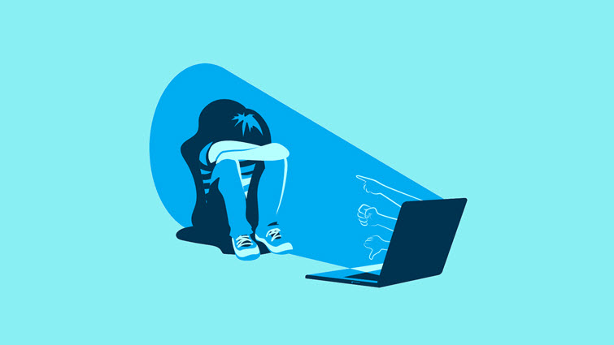

¿Qué consecuencias tiene el ciberbullying?
El ciberbullying puede tener graves efectos en la salud mental y emocional de las víctimas, incluyendo:
- Depresión y ansiedad.
- Baja autoestima.
- Aislamiento social.
- Dificultades académicas o laborales.
- En casos extremos, pensamientos suicidas.
